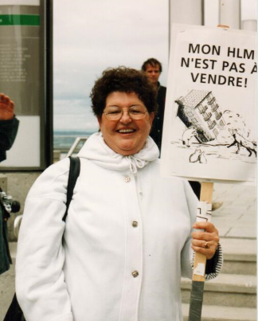

Les 25 ans de notre fédération (historique de la FLHLMQ)
Pour souligner son 25e anniversaire, la FLHLMQ a publié sous forme de feuilleton hebdomadaire une série de petits articles sur son histoire. Merci à André Giroux pour la rédaction de ces articles.
Au Québec, les HLM ont véritablement vu le jour dans les années ’70 pour loger les citoyens expulsés de leur logement pour faire place aux grands projets de revitalisation de l’époque. On peut se souvenir des démolitions occasionnées par le passage de l’autoroute 40 à travers TroisRivières, par la construction de l’immeuble de Radio-Canada à Montréal et de la Place du Portage sur l’île de Hull ainsi que par les fermetures de villages au centre de la Gaspésie. Pour éviter les protestations, toutes les personnes déplacées étaient invitées à venir vivre dans de beaux HLM tout neuf à un loyer très bas. Ce sont donc une diversité de populations qui ont composé les premiers HLM assurant un droit au logement pour tous et toutes.
Dans les années ’80, les politiques sociales se durcissant, les gouvernements à Québec ont décidé de restreindre l’accès aux HLM aux seules populations les plus démunies. Par des modifications aux règlements sur la fixation des loyers et sur les règles d’attribution des logements, on a progressivement chassé les ménages travailleurs. Si bien que de 1978 à 1989, la proportion de locataires déclarant un revenu de travail est passé de 20% à 7%. Pour planter un clou supplémentaire dans le concept du logement social accessible à tous et toutes, le gouvernement conservateur de Brian Mulroney a annoncé en 1993 que le fédéral se retirait unilatéralement de la construction de nouveaux HLM. La pénurie de logement social au pays venait de commencer.
C’est dans ce contexte que le Front d’action populaire en réaménagement urbain (FRAPRU) a eu la bonne idée, en 1993, d’encourager huit associations de locataires de HLM à créer la Fédération des locataires d’habitations à loyer modique du Québec (FLHLMQ). Fait cocasse, le seul employé du FRAPRU ayant voté contre ce projet est devenu coordonnateur de la FLHLMQ et ce depuis 25 ans.

Photo: Les membres du conseil d'administration de la FLHLMQ en 1995
Dès le départ, le principal objectif qui a animé la Fédération a été la démocratie. Dans certains offices comme ceux de Montréal, Québec et Trois-Rivières, on supportait la création d’associations de locataires alors que dans d’autres villes, on les interdisait. Il fallait donc faire reconnaître le droit d’association des locataires de HLM pour leur donner une voix face aux gestionnaires des OMH.
Rapidement, d’autres enjeux se sont ajoutés aux batailles de la Fédération afin que les locataires se sentent chez eux dans un HLM. Autant des petites batailles, au quotidien, notamment sur le droit de posséder des animaux de compagnie ou simplement choisir la couleur de la peinture de son logement, que de plus grandes batailles pour prévenir la hausse de nos loyers, obtenir des budgets pour la rénovation de nos immeubles ou empêcher la privatisation des HLM.
Nous vous présenterons au cours des prochaines semaines les événements et les enjeux qui ont jalonné l’histoire de la Fédération depuis 25 ans, question de faire le point sur les acquis obtenus et sur ce qui nous attend au cours des prochaines années.
Les batailles pour la démocratie
Dès 1993, le premier défi auquel la Fédération des locataires d'habitations à loyer modique du Québec (FLHLMQ) a été confrontée, c'est le besoin d'obtenir la reconnaissance du droit de se doter d'une association de locataires. Le thème du premier congrès, tenu en 1995, était « Une plus grande place pour les locataires ». Ce thème reflétait particulièrement bien l'esprit de l'époque.
« On sentait que certains administrateurs de HLM, heureusement pas tous mais ils étaient plusieurs, agissaient comme si les locataires étaient des moins que rien, se souvient Robert Pilon, coordonnateur de la Fédération depuis le début. Leur gestion était au mieux paternaliste, au pire très autoritaire. Cela reflétait le fait que les locataires de HLM se considéraient en échec : échec dans l'emploi, la vie de couple, l'échec scolaire, des loisirs et de la consommation. »
D'où le thème du premier congrès afin de faire valoir que les locataires de HLM sont des citoyens à part entière et capables d'assumer leur vie en HLM.
La bataille pour la démocratie est passée par le droit d'être informés, consultés et de se regrouper en association. La réalité, c'était qu'à Longueuil, à Chicoutimi et à Bromont, les dirigeants refusaient de reconnaître les associations de locataires. À l'époque, en pratique, la reconnaissance des associations était à la discrétion des dirigeants locaux, qui décidaient s'ils allaient les accepter avec le financement et la disposition d'un local que cela suppose, les tolérer ou les rejeter.
Certains offices, comme celui de Montréal, acceptaient des comités de loisirs, par immeuble, mais ne voulaient pas qu'ils se regroupent pour négocier. C'était à l'époque la pratique la plus progressiste. Beaucoup d'offices se vantaient de ne pas avoir d'associations de locataires et affirmaient clairement qu'ils n'en voulaient pas, sous prétexte que cela créerait du trouble.
À Bromont, des femmes locataires formidables, notamment Isabelle Marrisal qui deviendra plus tard présidente de la FLHLMQ, avaient reçu des lettres d'avocats affirmant qu'elles devaient quitter le premier juillet suivant parce qu'elles avaient tenté de créer une association.
À Longueuil, des femmes courageuses ont lutté pendant sept ans pour se doter d'une association de locataires. L'OMH refusait de la reconnaître sous la férule du maire Claude Gladu.
La Fédération a obtenu sa première victoire en avril 1998, après avoir déposé une pétition de 30 000 noms pour obtenir la reconnaissance du droit d'association en HLM et tenu la plus grosse manifestation de locataires de HLM, plus de 700, devant l'Assemblée nationale et devant le congrès du Regroupement des offices d'habitation du Québec. Dès juin 1998, la SHQémet une directive demandant aux OMH de reconnaître, de financer et de consulter les associations de locataires. À l'époque, le président de la Fédération, Claude Gelderblom, de Rivière-du-loup, avait déclaré avec enthousiasme que ce gain représentait une « véritable révolution tranquille pour les HLM ». Et ce, pour deux raisons :

Donner la chance aux locataires qui le souhaitent de s'impliquer activement dans la gestion de leur immeuble améliorera la qualité des services et contribuera à donner une image plus positive du logement public et ce, à la fois aux yeux des politiciens et de la population ;
Cet engagement des locataires leur donne l'occasion de se revaloriser à leurs propres yeux, se réappropriant ainsi leur dignité
Malgré ce premier gain, des locataires font l'expérience à la dure que des offices font fi de la directive administrative car elle n'a pas force de loi. La FLHLMQ repart donc à l'offensive pour que le droit d'association des locataires soit inscrit à la loi de la Société d'habitation du Québec.
En avril 2002, la Loi sur la SHQ est modifiée pour inclure deux nouveaux droits aux locataires de HLM : l'obligation pour les offices de reconnaître toutes les associations qui se conforment aux directives de la SHQ et l'obligation pour tous les offices de créer un comité consultatif de résidents (CCR). Selon le président de la Fédération de l'époque, Jean-Marie Doyon, de RockForest, « la mise en place des comités consultatifs va nous donner la chance de changer la face des HLM ».
Ces acquis ont permis pendant les quinze années suivantes de créer des dizaines de comités consultatifs de résidant-e-s (CCR) un peu partout au Québec. Plusieurs CCR sont très fiers de ce qu'ils ont réalisé depuis. Par contre, plus de la moitié des offices n'ont jamais mis en place de CCR.
Selon Élisabeth Pham, qui travaille depuis 2003 à la FLHLMQ, « cela nous démontre qu'il a été beaucoup plus facile d'obtenir un changement législatif que d'obtenir un véritable changement d'attitude sur le terrain. C'est une bataille de tous les jours. Encore aujourd'hui, beaucoup de personnes actives ont peur de subir des représailles : peur de perdre leur logement, de déplaire aux administrateurs. »
Ces craintes reposent sur des faits concrets : menaces de se faire déménager dans un endroit plus petit ou dans un quartier que le locataire n'aime pas.
Le rapport de pouvoirs existe toujours. En 2011, dans un sondage de la Société d'habitation du Québec (SHQ), 49% des directeurs d'office s'opposaient aux associations de locataires. Or, les HLM, c'est un monde où 70% des locataires sont des femmes seules, alors que les dirigeants sont encore majoritairement des hommes.
C'est donc toujours un énorme défi, pour des gens exclus de tout, d'apprendre à occuper les espaces démocratiques qui sont pourtant le fruit de leurs luttes.
C'est pourquoi la Fédération demeure très présente sur le terrain pour soutenir les locataires qui veulent s'organiser.
Sur la photo: Claude Gelderblom, président de la FLHLMQ, en 1998, devant l'Assemblée nationale.
La bataille pour le retour des travailleuses et travailleurs dans les HLM
Dès la création de la Fédération, en 1993, il était évident pour tous les résidents que les HLM étaient devenues un milieu de vie très difficile. Cela parce que dès le début des années ’80, le gouvernement québécois avait changé les règles de deux façons :
En abolissant l’échelle Rogers, qui établissait le loyer selon une échelle de 16% à 25% du principal revenu dans le ménage pour le remplacer par un loyer établi à 25% des deux principaux revenus et ce, sans plafond.
En restreignant les règles d’attribution par un système de pondération visant à ne prioriser que les plus pauvres, excluant de fait les ménages travaillant même au salaire minimum.
Avec pour résultat que de vastes complexes immobiliers de 200 à 400 logements ne comptaient plus que trois ou quatre ménages travailleurs. On créait ainsi des ghettos de pauvreté où il devenait plus difficile d’élever une famille que dans les années ’70 et ’80. Un chercheur, Paul Morin, a lancé le mot de trappe sociale pour indiquer qu'il devenait également plus difficile d'en sortir.
En 1993, le ministre des Affaires municipales de l’époque, Claude Ryan, a voulu aller plus loin en considérant l’ensemble des revenus familiaux, incluant ceux des enfants. Le tollé fut tel que c’est la mobilisation des locataires pour maintenir le loyer des HLM qui a permis au Front d’action populaire en réaménagement urbain (FRAPRU) de créer la Fédération. Cette bataille a permis d’obtenir un gain partiel, soit la fixation de montant forfaitaire pour les jeunes de 18 à 24 ans habitant avec leurs parents. Ce n’est qu’à l’âge de 25 ans que le pourcentage s’élève à 25% de leur revenu.
Deux gains significatifs

Au début des années 2000, sous la présidence d’Isabelle Marissal, de Bromont, la Fédération a organisé plusieurs manifestations et conférences de presse dans plusieurs grandes villes du Québec pour démontrer qu’en raison des politiques de loyer, il n’était pas avantageux de travailler à bas salaire tout en demeurant en HLM. La Fédération a obtenu de la ministre responsable de l’Habitation, Louise Harel, un amendement à la réglementation pour obtenir un loyer protégé. Cela signifie que le loyer des personnes qui commencent à travailler augmentera graduellement, permettant ainsi à ces gens de demeurer dans un HLM plus longtemps. Les locataires de coopératives d’habitation et d’habitations propriété d’organismes à but non lucratif (OBNL) ont aussi bénéficié de cette mesure. L’objectif de la Fédération consistait à développer une certaine mixité dans les HLM.
C’est aussi dans le but d’augmenter la mixité sociale qu’en 2011, après 19 ans de représentations tenaces, la Fédération a obtenu un amendement au Règlement sur l’attribution des HLM afin de tenir compte de l’ancienneté de la demande. Ce n’étaient plus uniquement les plus pauvres parmi les plus pauvres qui accédaient à un HLM. On y retrouvait des gens avec des expériences diverses, donnant ainsi un milieu de vie où il est plus agréable de vivre.
En 2011, la SHQ promettait pour 2016 une étude sur l’impact de cette mesure sur la mixité sociale. On l’attend encore en 2018.
Deux reculs évités
Lorsque Lucien Bouchard est devenu premier ministre du Québec, au lendemain du référendum de 1995, il a enclenché la lutte pour le déficit zéro. Avec cette obsession en tête, son gouvernement est venu à un cheveu de transférer la responsabilité des HLM aux municipalités, sans les budgets correspondants. Ce qui aurait été une voie royale vers leur privatisation. En Ontario, par exemple, sous la férule de la révolution du bon sens de Mike Harris, le transfert aux municipalités a provoqué la vente des HLM au marché privé. Au Québec, c’est la sortie publique de la Fédération, en alliance avec le FRAPRU, qui a fait reculer le gouvernement.
Par la suite, Rémi Trudel et le PQ ont annoncé le projet de ramener sur cinq ans, à raison de 1% par année, le loyer à 30% des revenus dans les HLM. Par leur mobilisation, notamment une pétition remise à tous les député-e-s, les locataires de HLM ont obtenu le rejet de cette mesure alors que presque partout ailleurs au Canada, cette proportion atteint 30% depuis près de vingt ans.
Les batailles pour les rénovation !
À l’arrivée au pouvoir de Jean Charest, en 2003, le budget total alloué aux HLM était de 50 millions de dollars par année pour rénover et entretenir 63 000 HLM. La première décision du nouveau ministre responsable de l’Habitation, Jean-Marc Fournier, a été de réduire à 30 M $ ce budget.
Il n’y avait pas une ville, pas un HLM, où les locataires réussissaient à obtenir le changement de leurs vieux tapis ou une nouvelle hotte de cuisine, encore bien moins la rénovation de leur cuisine ou de la salle de bain vieille de 30 ans. Zéro rénovation, sauf pour les urgences ou la remise en état nécessaire à la relocation. D’ailleurs, la SHQ évaluait à près de 4 milliards $ le déficit d’entretien accumulé pour la rénovation de l’ensemble du parc HLM au Québec.
Sous la présidence de Nicole Sirois, de l’Estrie, la Fédération a initié une pétition qui a recueilli près de 54 000 signatures. Le document réclame que les libéraux augmentent à 100 M $ par année les sommes allouées à la rénovation des HLM. Cent-dix député-e-s se sont levé-e-s à tour de rôle à l’Assemblée nationale pour lire le contenu de la pétition remise par les associations de locataires de HLM de leur comté. Beaucoup de député-e-s de tous les partis étaient sympathiques à notre cause mais le ministre Fournier demeura intraitable.
L’année 2007 – 2008 a connu la plus importante crise économique mondiale depuis la Grande dépression des années ’30. Le Canada s’en est tiré un peu mieux que les autres pays grâce à un programme d’infrastructures que le gouvernement fédéral a créé à la même époque.

À la surprise générale, en décembre 2007, la remplaçante de Jean-Marc Fournier, Nathalie Normandeau, invite les représentant-e-s de la FLHLMQ à une conférence de presse dans un HLM à côté de nos bureaux dans le quartier de la Petite-Bourgogne à Montréal. Elle annonce un programme de rénovations des HLM étalé sur quinze ans : ce programme fédéral-provincial, à hauteur de 260 millions de dollars par année, est indexé. Si bien qu’en 2017, il s’élevait à 360 M$. En dix ans, trois milliards de dollars furent investis dans la rénovation des HLM. Aux dires de la SHQ, nous en sommes à 79% dans l’avancement des travaux de rénovation des HLM.
Le coordonnateur de la FLHLMQ, Robert Pilon, se rappelle que sur la photo prise avec la ministre, il n’arrivait pas à sourire car cela semblait beaucoup trop beau pour être vrai.
C’est, selon lui, «une victoire historique qui garantit la survie des HLM en raison de l’argent investi. Ce sont des investissements proportionnellement plus élevés que dans les écoles, par exemple. Il reste cependant une multitude de batailles locales à mener pour s’assurer que cet argent soit dépensé pour répondre aux vrais besoins des locataires.»
Les batailles à l'Assemblée nationale du Québec
En 25 ans, la FLHLMQ a défendu à plusieurs reprises la cause des HLM devant les député-e-s à Québec. Voici un bref survol des positions quelquefois courageuses ou visionnaires que nous avons prises suite à des débats en congrès.
Le 4 mars 1995 - Courrons le risque de l'indépendance si le projet en vaut la peine ! Présentation de la FLHLMQ à la Commission des aînées et aînés sur l'avenir du Québec
Le 1er décembre 2000 - Les fusions peuvent favoriser la gestion et le développement du logement social en faveur des populations démunies des grandes villes. Présentation de la FLHLMQ devant la Commission de l’aménagement du territoire sur le projet de loi no. 70.
Le 24 octobre 2002 – Pour une gestion moderne et transparente des HLM afin de favoriser la participation des locataires. Présentation de la FLHLMQ devant la Commission sur l’aménagement du territoire sur le projet de loi no. 49.
Le 6 février 2004 – Quatre grands chantiers pour développer les HLM au Québec. Présentation dans le cadre des consultations pré-budgétaires du Ministère des Finances du Québec.
Le 14 février 2005 – La santé de la population passe bien avant la santé de l’industrie pharmaceutique. Présentation de la FLHLMQ devant la Commission des Affaires sociales.
Mars 2013 – Des travaux qui changent le visage des HLM. Présentation de la FLHLMQ au Ministère des Finances du Québec.
20 janvier 2016 – Pour mettre fin à l’éparpillement des ressources et offrir de meilleurs services aux locataires de HLM du Québec. Présentation de la FLHLMQ au Ministre des Affaires municipales.
Janvier 2016 - Une proposition pour réduire la pauvreté dans les HLM - Le transfert de l'entretien vers les locataires. Présentation dans le cadre de la consultation publique Solidarité et inclusion sociale.
2016-2017 – Plus de 300 locataires ont participé à la tournée de consultation organisée par le député Norbert Morin et la SHQ sur une nouvelle approche d’intervention en habitation dans une vingtaine de villes au Québec.
À chaque fois, ce fut une expérience riche mais exigeante pour les locataires qui se sont succédé-e-s au CA de la FLHLMQ d’aller ainsi prendre la parole à l’Assemblée nationale avec tout son décorum.
La bataille des référendums

Dès les premiers mois de son existence, en 1993, l’enjeu de la présence d’animaux dans les HLM a préoccupé la Fédération des locataires d’habitations à loyer modique du Québec (FLHLMQ). À l’époque deux résidantes de Longueuil, Fleurette Trottier et Denise Blanchard se battaient devant les tribunaux pour conserver l’une son chien, l’autre ses deux chats. Après avoir perdu devant la Régie du logement, madame Trottier a porté sa cause en appel et gagné devant la Cour du Québec pour des raisons techniques.
Solidaire de leur combat, la Fédération a demandé à la Société d’habitation du Québec (SHQ) de contraindre les OMH à permettre la présence d’animaux de compagnie dans les HLM. Même si l’Association des OMH du Québec (appelée maintenant le Regroupement des offices d’habitations du Québec) recommandait à l’époque à ses membres de faire preuve de tolérance, seules quelques dizaines de villes, dont Montréal et Québec, permettaient les animaux.
Il faudra attendre cinq ans, et de nombreux cas pathétiques de locataires expulsé-e-s, notamment celui d’Ezzy le chat en Cours supérieure pour qu’en 1998, la FLHLMQ persuade la ministre des Affaires municipales, Louise Harel, de donner le pouvoir décisionnel aux locataires de décider si la présence des animaux devait être permise ou non. « L’idée de donner le pouvoir aux locataires de tenir un référendum sur les animaux a séduit la ministre qui connaissait très bien la question des référendums pour en avoir vécu deux malheureux de très près », de dire Robert Pilon, coordonnateur de la FLHLMQ
L’adoption, en 2002, d’un amendement à la Loi sur la Société d’habitation du Québec qui oblige les offices à se doter d’un comité consultatif des résidants (CCR), a conduit la SHQ a modifié son Guide de gestion du logement social afin de confier le mandat aux CCR de « prévoir, en collaboration avec l’office, un mécanisme de vote secret pour permettre aux locataires de se prononcer sur la présence des animaux en HLM. » De plus, « si une majorité de locataires se montre en faveur de la présence des animaux en HLM, l’office ne pourra l’interdire de façon générale et il devra émettre des balises à cet effet et les intégrer au règlement d’immeuble (…) »
« La question des animaux est le seul enjeu sur lequel les locataires ont obtenu un véritable pouvoir décisionnel mais c’est malheureusement encore peu connu ou parfois caché aux résidant-e-s », souligne Robert Pilon. Depuis 2002, une cinquantaine d’associations de locataires ont organisé un référendum sur les animaux. La FLHLMQ recommande le libellé suivant au référendum, auquel il suggère de voter OUI :
Seriez-vous d’accord pour
1. que l’OMH autorise la présence des animaux en exigeant que les locataires se conforment aux conditions suivantes : UN CHAT, À LA CONDITION QU’IL SOIT OPÉRÉ, DÉGRIFFÉ ET GARDÉ À L’INTÉRIEUR DU LOGEMENT; ou UN CHIEN, À LA CONDITION QU’IL NE JAPPE PAS, SOIT TOUJOURS EN LAISSE À L’EXTÉRIEUR ET QUE LES EXCRÉMENTS SOIENT RAMASSÉS
2. que l’office intervienne fermement contre les locataires qui ne se conformeront pas à ces nouvelles règles. Cochez votre choix : OUI___ NON___
À ce jour, plus de la moitié des 443 OMH, dont celui de Longueuil, permettent les chats ou les chiens. Comme quoi la situation a bien changé à Longueuil depuis 1993 concernant le droit de posséder un animal. Dans beaucoup d’autres villes aussi !
Photo: Manifestation devant l'hôtel de ville de Longueuil en 1994 organisée par la FLHLMQ.
Monik Desjardins est arrivée à la Fédération des locataires d’habitations à loyer modique du Québec (FLHLMQ) en 1994, un an après la fondation de la Fédération. Elle est alors devenue membre du conseil d’administration, y représentant le HLM des Hirondelles, où elle était entrée en 1989. Ce fut le début d’une longue expérience qui a encore cours en 2018.
L’une des expériences les plus marquantes de Monik a été sa rencontre, en avril 1998, avec Jean Campeau, alors député péquiste de Crémazie. Avant son élection, il avait co-présidé la Commission Bélanger-Campeau, qui portait sur l’avenir politique et constitutionnel du Québec. Il a aussi été ministre des Finances et du Revenu (1994 – 1995) dans le gouvernement de Jacques Parizeau.
Lors de sa rencontre avec Jean Campeau, Monik agissait à titre de porte-parole des sept associations de locataires du quartier Ahuntsic, regroupant 600 ménages. Elle a remis au député une pétition de 500 noms. La pétition demandait au gouvernement de rester propriétaire des HLM plutôt que de les transférer aux municipalités, de ne pas augmenter leur loyer à 30% de leurs revenus comme cela se faisait de plus en plus au Canada anglais, d’encourager les ménages travailleurs à bas revenus et d’adopter un règlement favorisant la participation des locataires à la gestion de leurs immeubles. Au fil des ans, les signataires obtiendront gain de cause, grâce à la pétition qui a obtenu 50 000 noms au Québec.
« M. Campeau est le seul député qui est venu nous rejoindre à la manifestation de 700 personnes que la Fédération a organisée devant l’Assemblée nationale du Québec », souligne Monik Desjardins.
L’année suivante, lors du troisième congrès de la Fédération, elle devient secrétaire de l’organisme et vice-présidente de l’OMH de Montréal. « Moi qui pensais que j’étais juste une b.s., j’ai pris confiance en moi depuis que je suis en HLM » déclarera-t-elle quelques années plus tard à Josée Boileau, journaliste au quotidien Le Devoir.
L’un des événements qui a donné confiance à Monik c’est son intervention devant la commission parlementaire sur la possibilité de fusionner les offices d’habitations, ce que proposait la Fédération en 2001
« La mairesse de Sainte-Foy, Andrée Boucher, passait avant nous, se souvient Monik. Le coordonnateur de la Fédération, Robert Pilon, m’a suggéré de m’inspirer d’elle. Lorsque ce fut à mon tour d’intervenir, Louise Harel, alors ministre péquiste m’a félicitée d’être la première locataire siégeant au comité exécutif d’un OMH. Madame Fatima Houda-Pepin, députée libérale m’a aussi félicitée même si j’avais des désaccords avec elle. Je m’en souviens encore, 17 ans plus tard. »
Un désaccord avec l’OMH de Montréal, qui avait refusé de donner suite à une décision prise en assemblée des locataires, amena Monik à démissionner de ses fonctions électives.
Elle reviendra à la Fédération dix ans plus tard, en 2012, pendant au moins deux jours semaines, à titre de bénévole. C'est elle qui répond au téléphone et qui vous prodigue ses précieux conseils qui sont le fruit de sa vaste expérience.
C'est grâce à Monik et aux deux mille bénévoles impliqué-e-s dans les associations de locataires de HLM au Québec que la FLHLMQ existe depuis 25 ans.